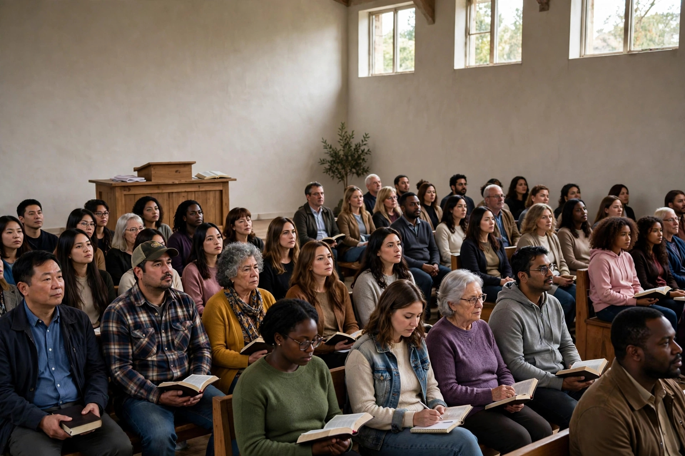

A pior patologia não é aquela que manifesta febre imediata ou dores agudas, mas a contaminação assintomática que destrói os órgãos vitais enquanto o hospedeiro imagina gozar de plena saúde. O cenário eclesiástico contemporâneo atravessa uma verdadeira pandemia invisível. Sob o manto de templos lotados, relatórios financeiros vultosos e entretenimento de alta performance, esconde-se a gangrena da apostasia e do pragmatismo moral.
A Escritura Sagrada antecipou essa condição estéril e enganosa ao descrever a igreja de Sardes: "Conheço as tuas obras, que tens nome de que vives, e estás morto" (Apocalipse 3:1). Da mesma forma, o apóstolo Paulo adverte a Timóteo sobre os tempos trabalhosos em que muitos teriam "aparência de piedade, mas negando a eficácia dela" (2 Timóteo 3:5). O contágio é virulento precisamente porque não choca os sentidos de imediato; ele anestesia a consciência coletiva até que o erro seja institucionalizado como virtude.
Grandes nomes do protestantismo e do pentecostalismo clássico jamais contemporizaram com a decadência espiritual mascarada de religiosidade. O evangelista pentecostal Leonard Ravenhill (1907–1994), em sua obra contundente Por Que Tarda o Avivamento?, diagnosticou a cegueira de sua época ao afirmar que a igreja moderna tenta compensar a falta de unção e poder espiritual com organização, métodos seculares e arquiteturas pomposas, ignorando que o Espírito Santo não habita em estruturas carnais.
No mesmo tom de severidade, o pastor e teólogo A. W. Tozer (1897–1963) alertava sobre a infiltração do entretenimento nos cultos, denunciando que quando a igreja perde a presença real de Deus, recorre a espetáculos teatrais para reter a multidão. Tozer destacava que o erro doutrinário raramente entra de forma ruidosa; ele se esgueira pela porta dos fundos quando os atalaias adormecem.
O influente pregador batista Charles Haddon Spurgeon (1834–1892), durante a famosa "Controvérsia do Rebaixamento" (Down-Grade Controversy), expôs sem rodeios o processo de contágio assintomático: "A igreja que não se separa do mundo logo será destruída pelo mundo. Um milímetro de desvio do rumo da verdade nos conduzirá, com o tempo, a léguas de distância do Evangelho de Cristo".
A história da Igreja demonstra que Deus nunca deixou a contaminação epidêmica sem resposta profética. Em momentos cruciais de degradação, reformas rigorosas e avivamentos fundamentados no arrependimento trouxeram o povo de volta à sanidade teológica:
Não existe neutralidade diante de uma infecção espiritual. A única vacina e o único antídoto eficaz contra a pandemia eclesiástica é o retorno intransigente à sã doutrina revelada na Palavra de Deus. O apóstolo Paulo exorta solenemente: "Tu, porém, fala o que convém à sã doutrina" (Tito 2:1) e ordena a Timóteo: "Maneja bem a palavra da verdade" (2 Timóteo 2:15).
A cura exige a rejeição peremptória do pragmatismo mercenário, a eliminação do culto à personalidade dos líderes e a restauração da pregação confrontadora que expõe o pecado e aponta para a cruz de Cristo. Somente quando a Igreja abandonar a ilusão da saúde institucional e se prostrar em sincero arrependimento é que a verdadeira vida espiritual florescerá novamente.